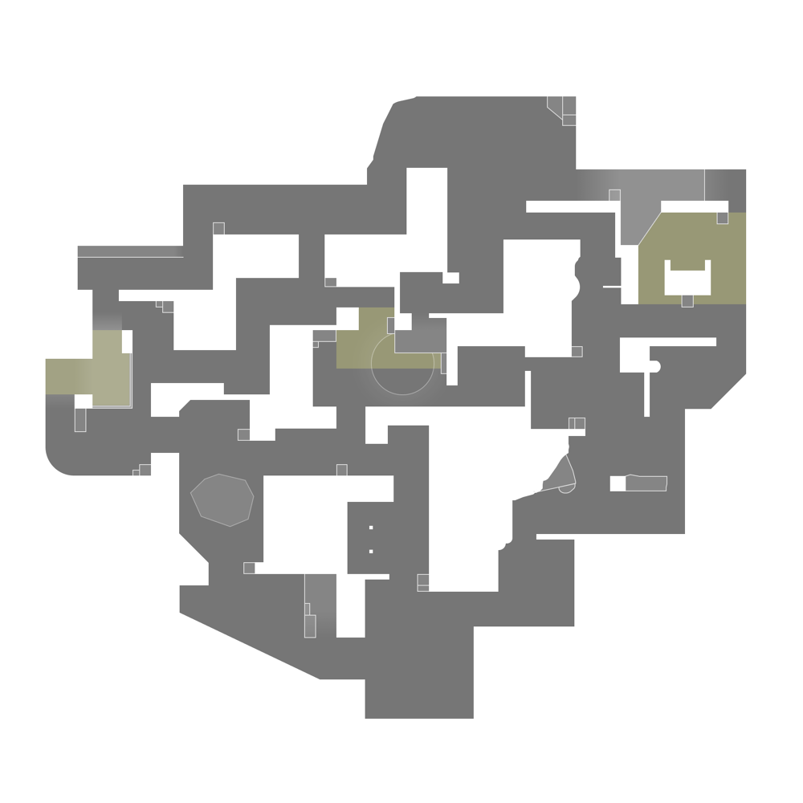

LOTUS
// LOCATION
Western Ghats, India
// OVERVIEW
A lost city hidden within a lush jungle, Lotus is a three-site map similar to Haven but with its own dynamic twists. The map's layout encourages constant movement and offers multiple pathways for both attackers and defenders.
// UNIQUE FEATURE
Rotating Doors & Destructible Wall: Lotus features two large rotating stone doors that can be activated by either team to open or close pathways. There is also a breakable wall connecting A Main to B Site, creating new lines of sight and rotation options once destroyed.